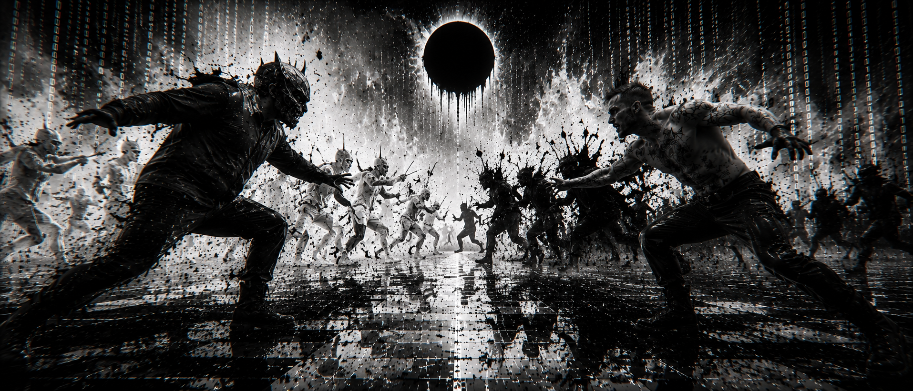
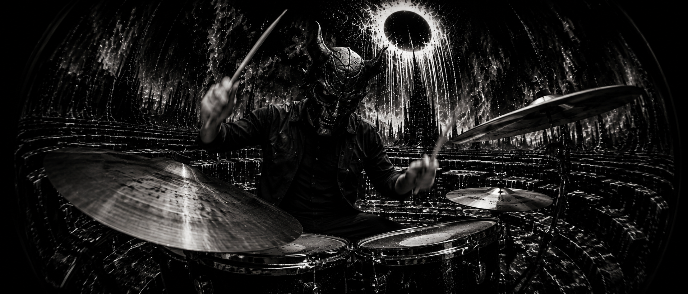

Somos la voz que no pidió permiso. El eco de los que ya no tienen nombre.

Voz que parte la piedra. Guitarra como arma ritual. Del vacío al sonido, sin intermediarios.
Las frecuencias que mueven la tierra. Bajo como latido sísmico, el fundamento sobre el cual se erige el templo.
Percusión como sacrificio. Cada golpe es un latido del volcán. Blast beats como oración.
BAAL nació en las entrañas de Bogotá, Colombia — una ciudad construida sobre mitos Muiscas que nunca se apagaron. La banda canaliza la herencia pre-colombina a través del black metal ortodoxo, el avant-garde y la devastación sónica sin concesión.
Desde su formación, BAAL se ha negado a ser categorizado fácilmente. Su sonido es una fusión violenta entre la tradición ritual de los pueblos originarios y la aspereza extrema del metal subterráneo. Cada presentación es una ceremonia. Cada nota es una ofrenda.
"No tocamos para entretener. Tocamos para despertar lo que el mundo moderno intentó enterrar."
— BAALChie Umbra, su álbum debut, es la culminación de años de trabajo en las sombras — nueve puertas que se abren hacia el inframundo Muisca, donde la oscuridad no es ausencia sino presencia.
BAAL surge de las sombras de Bogotá. Los tres miembros se encuentran en el underground y comienzan a forjar el sonido que definiría al proyecto.
Presentaciones en vivo que sacuden la escena underground colombiana. La banda comienza a ganar notoriedad por su intensidad implacable.
Se encierran en el estudio para dar vida a Chie Umbra. Cada track es capturado con la crudeza y autenticidad que exige el ritual.
El álbum debut ve la luz. Nueve puertas hacia el abismo. BAAL se consolida como una de las propuestas más intensas del metal latinoamericano.